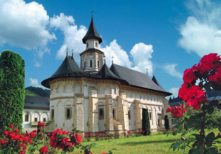

Gura Humorului is a town in Suceava County, north-eastern Romania. It is situated in the historical region of Bukovina. Gura Humorului is the seventh largest urban settlement in the county, with a population of 12,729 inhabitants, according to the 2011 census. It was declared a town in 1904 and it became a resort in 2005. The town administers the former village of Voroneț (which became a neighborhood), site of Voroneț Monastery.
Main attraction: Voronet Monastery
The Voroneț Monastery is a medieval monastery in the Romanian village of Voroneț, now a part of the town Gura Humorului. It is one of the famous painted monasteries from southern Bukovina, in Suceava County. The monastery was constructed by Stephen the Great in 1488 over a period of 3 months and 3 weeks to commemorate the victory at Battle of Vaslui. Often known as the "Sistine Chapel of the East", the frescoes at Voroneț feature an intense shade of blue known in Romania as "Voroneț blue". The monastery is located to the south of Gura Humorului in Suceava County, in the valley of the Voroneț River. The legend of the origin of the church unites two men central to Romanian history: the founder of the monastery, Stephen the Great, and Saint Daniil the Hermit, the first abbot of the monastery. The tomb of Saint Daniil is located within the monastery. The church is one of the Painted churches of Moldavia listed in UNESCO's list of World Heritage sites

2. Putna Monastery
The Putna monastery (Romanian: Mănăstirea Putna) is a Romanian Orthodox monastery, one of the most important cultural, religious and artistic centers established in medieval Moldavia; as with many others, it was built and dedicated by Stephen the Great. Putna was founded on the lands perambulated by the Putna (which has its source in the Obcina Mare mountains, Bukovina). Stephen the Great is famous for building and influencing the building of dozens of churches and monasteries all over Moldavia (allegedly, he founded a religious edifice after each important military victory). The Putna Monastery houses the tombs of Stephen —nowadays, a place of pilgrimage —, and several of his family members. The icon veils and tombstones are held as fine examples of Moldavian art in Stephen the Great’s time. Right after Stephen the Great won the battle in which he conquered the Kilia citadel, he began work on the monastery as a means to give thanks to God, on July 10, 1466 - the church was to be dedicated to the Virgin Mary. Previous eremitic life (on the place the monastery was built) was proven by humans buried deep under the foundation of the oldest buildings from Stephen the Great. A chronicle of the time mentions that Stephen bought the Vicovu de Sus village in exchange for 200 zloty, and awarded the land and revenue to the treasury of the monastery. Putna was completed in three years, but was consecrated only after one more year passed, given that the Moldavians engaged in other battles. On September 3, 1470, during a ceremony attended by Stephen and all his family, the monastery was consecrated by Metropolitan Teoctist, and subsequently became the most important religious site in the area.
3. Vatra Dornei
Vatra Dornei is a city in Suceava County, north-eastern Romania. It is situated in the historical region of Bukovina. Vatra Dornei is the fifth largest urban settlement in the county, with a population of 14,429 inhabitants, according to the 2011 census. It was declared a municipality in 2000, being the newest and smallest municipality in the county. The city administers three villages: Argestru, Roșu and Todireni. Vatra Dornei is a well known spa and ski resort in the Carpathian Mountains and also is home to the historic Vatra Dornei Casino.
Main attraction: Vatra Dornei Casino
The Therapeutic Baths’ Casino of Vatra Dornei, also known as the Vatra Dornei Casino, is an abandoned historic monument located in Suceava County, Romania in the town of Vatra Dornei. It was built in 1898 by Austrian architect Peter Paul Brang while the territory was part of the Austro-Hungarian Empire. It is located on the Dorna River. It was initially constructed as an entertainment venue for tourists of Austria-Hungary whom would flock to the nearby therapeutic baths. The baths offered mineral water treatments, carbonic acid baths, and mud wraps for visitors while the nearby casino offered poker, craps, and roulette. The casino initially was designed to attract Viennese tourists looking for treatment. Local authorities hired traveling bands from Vienna and the structure itself was built as a sister casino to the current Grand Casino in Baden bei Wien, Austria, mimicking its design. In its heyday, the Casino attracted tourists from all over Austria-Hungary, mainly from Vienna, Berlin, and Budapest, but also Italian and Jewish travelers.The Casino opened its doors in 1898 and served personalities such as Emperor Franz Joseph and Archduke Franz Ferdinand, but also other regional notables, such as Lucian Blaga, Nicolae Iorga, Corneliu Zelea Codreanu, Nichifor Crainic, Emil Bodnăraş, Eugen Jebeleanu, Zaharia Stancu, and Gheorghe Gheorghiu-Dej. The casino also hosted Soviet generals on their way to Berlin in World War II.